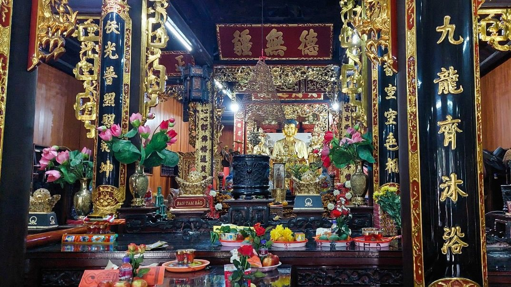
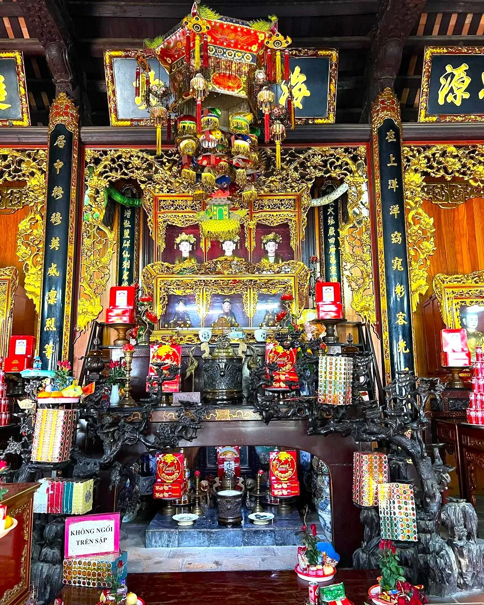

Ban Đức Ông
Nơi cầu công danh, sự nghiệp và những điều thuận lợi trong cuộc sống. Trước khi cầu duyên, nhiều người thường ghé ban Đức Ông để xin đường đi hanh thông, mở lối cho mọi việc được suôn sẻ và thuận lợi hơn.
Khám phá
Ban Tam Bảo
Không gian linh thiêng để dâng lễ và cầu bình an. Đây là nơi mỗi người gửi gắm lòng thành, buông bỏ những muộn phiền và tìm lại sự an yên trước khi bước tiếp hành trình cầu duyên.
Khám phá
Ban Mẫu
Nơi linh thiêng nhất để cầu tình duyên tại Chùa Hà. Rất nhiều người tìm đến đây với mong muốn gặp được nhân duyên phù hợp, giữ gìn tình cảm bền chặt và sớm tìm được người đồng hành trong cuộc sống.
Cầu duyên ngayVề Chùa Hà
Đi một về hai - Đi hai về một
Chùa Hà – Ngôi chùa cầu duyên nổi tiếng giữa lòng Hà Nội
Chùa Hà là điểm đến quen thuộc của những ai mong cầu tình duyên. Giữa Hà Nội tấp nập, nơi đây mang lại cảm giác yên bình để gửi gắm những ước nguyện về tình yêu và hạnh phúc.
- Nổi tiếng linh thiêng trong việc cầu duyên, thu hút nhiều bạn trẻ đến khấn nguyện tìm một nửa phù hợp.
- Không gian cổ kính, yên tĩnh giúp người đến dễ tập trung và cảm thấy nhẹ lòng hơn.
- Được truyền tai là “cầu là có duyên”, nên rất đông người ghé thăm mỗi dịp đầu năm.
Không chỉ cầu duyên, Chùa Hà còn là nơi để tìm lại sự cân bằng và chút bình yên trong cuộc sống.
Gợi Ý Mâm Lễ
Những lễ vật đơn giản nhưng đủ đầy, thể hiện sự thành tâm khi dâng lễ cầu duyên tại Chùa Hà.
Hương (nhang) là lễ vật không thể thiếu khi đến Chùa Hà. Khi thắp một nén hương, người ta như gửi gắm những suy nghĩ, mong cầu về tình duyên theo làn khói bay lên. Chỉ cần một nén thôi, nhưng quan trọng là sự thành tâm và tập trung vào điều mình thực sự mong muốn trong chuyện tình cảm.

Hương (Nhang)
Bánh kẹo hoặc lễ ngọt thường được chuẩn bị với ý nghĩa mang lại sự ngọt ngào trong tình yêu. Những món đơn giản như kẹo, bánh nhỏ hay đồ ngọt không chỉ dễ chuẩn bị mà còn thể hiện mong muốn về một mối quan hệ êm đềm, vui vẻ và ít trắc trở hơn trong tương lai.

Bánh kẹo
Mua lễ
Lễ càng đầy đặn, duyên càng nhanh chạm
Free
0 VND
- Hương (nhang) cơ bản
- Hoa tươi đơn giản
- Lễ nhỏ tượng trưng
- Không có trầu cau
- Không có lễ riêng ban Mẫu
Mâm lễ Standard
190,000 VND
- Hương + hoa tươi đầy đủ
- Trái cây + bánh kẹo cơ bản
- Trầu cau đơn giản
- Tiền vàng mức vừa phải
- Chưa có lễ riêng cao cấp
Mâm lễ Premium
290,000 VND
- Hoa hồng đẹp (cầu duyên)
- Trầu cau chuẩn chỉnh
- Bánh kẹo + trái cây đầy đủ
- Tiền vàng + sớ cầu duyên
- Lễ tách riêng cho ban Mẫu
Mâm lễ Ultimate
490,000 VND
- Mâm lễ đầy đủ 3 ban
- Hoa đẹp + trầu cau cao cấp
- Bánh kẹo + trái cây chọn lọc
- Tiền vàng + sớ viết sẵn
- Setup sẵn chỉ việc đi lễ
Văn khấn các ban thờ tại Chùa Hà
Gợi ý văn khấn chi tiết tại từng ban giúp cầu duyên đúng cách và thành tâm
Ban Tam Bảo (Ban Phật)
Khấn cầu bình an, thanh tịnh trước khi cầu duyên
Nam mô A Di Đà Phật (3 lần).
Con tên là: ………………………………………
Ngày tháng năm sinh: ………………………
Hiện đang sinh sống tại: ……………………
Hôm nay con đến trước cửa Phật, thành tâm dâng hương hoa lễ vật, cúi xin chư Phật mười phương,
chư vị Bồ Tát chứng giám lòng thành. Con xin được sám hối những lỗi lầm trong quá khứ,
những điều chưa đúng trong suy nghĩ và hành động.
Cúi xin các Ngài phù hộ độ trì cho con và gia đình được bình an, mạnh khỏe,
tâm trí an yên, cuộc sống thuận hòa. Xin cho con buông bỏ được những muộn phiền,
giữ được tâm sáng, lòng thiện để đón nhận những điều tốt đẹp trong cuộc sống và nhân duyên.

Ban Đức Ông
Khấn xin công việc, cuộc sống và duyên lành thuận lợi
Nam mô A Di Đà Phật (3 lần).
Con tên là: ………………………………………
Ngày tháng năm sinh: ………………………
Hiện đang sinh sống tại: ……………………
Hôm nay con thành tâm dâng lễ trước Đức Ông và chư vị hộ pháp,
kính xin các Ngài chứng giám. Con cúi xin được phù hộ độ trì cho công việc hanh thông,
cuộc sống ổn định, mọi việc được thuận buồm xuôi gió.
Nếu con còn gặp những trắc trở trong đường đời và tình cảm,
cúi xin các Ngài soi đường chỉ lối, giúp con gặp được những người tốt,
những mối nhân duyên lành, tránh xa điều xấu, để cuộc sống và tình duyên được suôn sẻ hơn.
Ban Mẫu (Cầu duyên)
Nơi cầu tình duyên linh thiêng nhất tại Chùa Hà
Nam mô A Di Đà Phật (3 lần).
Con tên là: ………………………………………
Ngày tháng năm sinh: ………………………
Hiện đang sinh sống tại: ……………………
Hôm nay con đến trước ban Thánh Mẫu, thành tâm dâng lễ,
cúi xin các Ngài chứng giám lòng thành của con. Con cầu xin cho đường tình duyên của con được thuận lợi.
Nếu con chưa gặp được người phù hợp, xin cho con sớm gặp được người có thể đồng hành,
yêu thương và thấu hiểu nhau. Nếu con đã có người trong lòng,
xin cho tình cảm được bền chặt, tránh những hiểu lầm và thử thách không đáng có.
Con xin hứa sẽ sống chân thành, biết trân trọng tình cảm,
và giữ gìn những gì mình có. Cúi xin Thánh Mẫu phù hộ độ trì cho con đạt được ước nguyện.
Nam mô A Di Đà Phật (3 lần).

Vãn cảnh
Dạo bước nơi linh thiêng, nơi nhiều câu chuyện tình bắt đầu.
{kind=link}
{kind=link}
{kind=link}
{kind=link}
{kind=link}
{kind=link}
{kind=link}
{kind=link}
Hoạt động & Trải nghiệm
Khám phá các hoạt động tâm linh quen thuộc, nơi mỗi lựa chọn đều mang theo một lời nguyện cầu.
Hòm công đức
Gửi gắm tấm lòng thành thông qua việc công đức, góp phần duy trì và gìn giữ không gian tâm linh tại chùa. Mỗi đóng góp, dù lớn hay nhỏ, đều mang ý nghĩa tích đức và cầu mong bình an, may mắn trong cuộc sống.
Phóng sinh
Thực hiện nghi thức phóng sinh với mong muốn tích đức, gieo duyên lành và giải trừ nghiệp chướng. Đây không chỉ là hành động mang tính tâm linh mà còn thể hiện lòng từ bi đối với muôn loài.
Xem bói
Xin quẻ để tìm lời giải cho những băn khoăn trong tình duyên và cuộc sống. Mỗi quẻ bói mang một thông điệp riêng, giúp bạn có thêm góc nhìn và định hướng rõ ràng hơn cho những quyết định phía trước.
Câu hỏi thường gặp
Những thắc mắc phổ biến khi đi Chùa Hà cầu duyên lần đầu
Đi Chùa Hà cầu duyên có thật sự linh không?
Chùa Hà từ lâu được biết đến là nơi cầu duyên linh thiêng tại Hà Nội. Nhiều người tin rằng nếu thành tâm khấn nguyện thì sẽ sớm gặp được nhân duyên phù hợp. Tuy nhiên, điều quan trọng vẫn là sự chân thành và cách bạn trân trọng các mối quan hệ trong cuộc sống.
Đi Chùa Hà cần chuẩn bị lễ gì?
Lễ vật sẽ khác nhau theo từng ban. Ban Tam Bảo dùng lễ chay như hương, hoa, trái cây. Ban Đức Ông có thể dâng lễ mặn như xôi, giò. Riêng ban Mẫu – nơi cầu duyên chính – thường chuẩn bị hoa hồng, trầu cau, bánh kẹo và tiền vàng.
Nên đi Chùa Hà vào thời điểm nào?
Chùa Hà đông nhất vào đầu năm, đặc biệt là sau Tết. Tuy nhiên, bạn có thể đi bất kỳ thời điểm nào trong năm. Nếu muốn không gian yên tĩnh hơn, nên tránh cuối tuần hoặc giờ cao điểm.
Có cần chuẩn bị bài khấn trước không?
Không bắt buộc phải thuộc bài khấn sẵn, nhưng nên chuẩn bị trước để tránh lúng túng. Bạn có thể khấn theo văn mẫu hoặc nói bằng lời của mình, miễn là rõ ràng và thành tâm.
Cầu duyên xong bao lâu thì có người yêu?
Không có mốc thời gian cụ thể. Có người gặp duyên rất nhanh, nhưng cũng có người cần thời gian. Việc cầu duyên mang yếu tố tâm linh, còn lại phụ thuộc vào việc bạn mở lòng và chủ động trong cuộc sống.
Đi một mình cầu duyên có được không?
Hoàn toàn được. Nhiều người còn chọn đi một mình để tập trung hơn khi khấn nguyện. Điều quan trọng không phải đi cùng ai mà là sự thành tâm của bạn.
Vị trí
Nếu có dịp, bạn có thể đến thăm Chùa Hà tại địa chỉ: